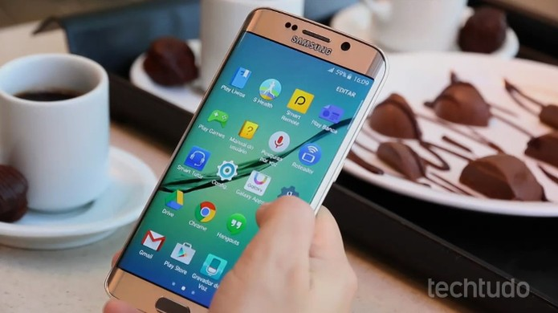

Como desativar apps instalados de fábrica em celular Samsung
Postado em 02 de Abril 2016
Os smartphones da Samsung costumam vir com vários apps instalados de fábrica, e muitos deles podem ser inúteis para a maioria dos usuários. Boa parte desses programas não pode ser removida completamente do aparelho, mas a fabricante permite desativá-los. Aplicativos desativados continuam armazenados no celular, mas ocupam menos espaço e não enchem a gaveta de apps com ícones que você não acessa nunca. A Samsung oferece pelo menos três formas de desativar um app no smartphone. Veja como realizar o procedimento no tutorial abaixo. O passo a passo foi feito em um Galaxy A5 2017 rodando Android 6.0 Marshmallow, mas tende a ser semelhante nos outros celulares da marca.
Postado por Thais GrazieleVai ser possível testar apps do Windows 10 dentro da publicidade
Postado em 12 de Dezembro 2016Cada vez mais as empresas estão a apostar numa integração dos sistemas operativos com os sistemas de publicidade. É através desta forma que conseguem potenciar as aplicações e fazer estas render dinheiro. A Microsoft tem agora uma nova ideia posta em prática, os Playable Ads, que vão permitir aos utilizadores testarem as aplicações antes de as comprarem, diretamente da publicidade onde vão ser apresentadas.Este conceito de aceder a aplicações sem as terem instaladas nos sistemas operativos não é novo. A Google já o tem em prática há algum tempo, com as Instant Apps.Agora, a Microsoft quer levá-lo bem mais longe, com a possibilidade de integrar as aplicações em publicidade, dando aos utilizadores a possibilidade de as testarem durante alguns minutos, comprovando assim a sua utilidade e a sua necessidade. reduzidas das aplicações. Todo o controlo é feito pela Microsoft, desde o envio da aplicação até ao fim da experimentação.
Postado por Thais GrazieleMinistério da Cultura vai lançar edital para apoiar novos youtubers e desenvolvedores de apps
Postado em 12 de Dezembro 2016O Ministério da Cultura anunciou que irá lançar em 2017 um edital para apoiar novos canais no YouTube. O auxílio tem objetivo de criar mais conteúdo sobre cultura na plataforma de vídeos. Também haverá um apoio para o desenvolvimento de aplicativos móveis. Governo paga R$ 65 mil para canal no Youtube fazer elogios ao novo ensino médio Durante a feira audiovisual Rio Content Market, a secretária do audiovisual do Ministério da Cultura anunciou o edital. A previsão é de que o Governo colabore com 50 mil reais para canais de vídeo e 20 mil reais para desenvolvedores de apps.
Postado por Thais Graziele